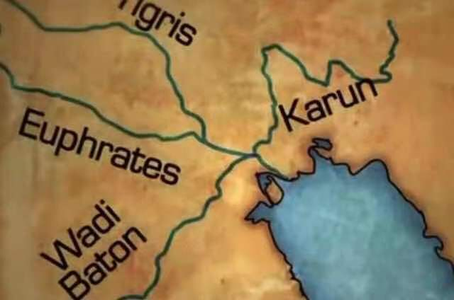
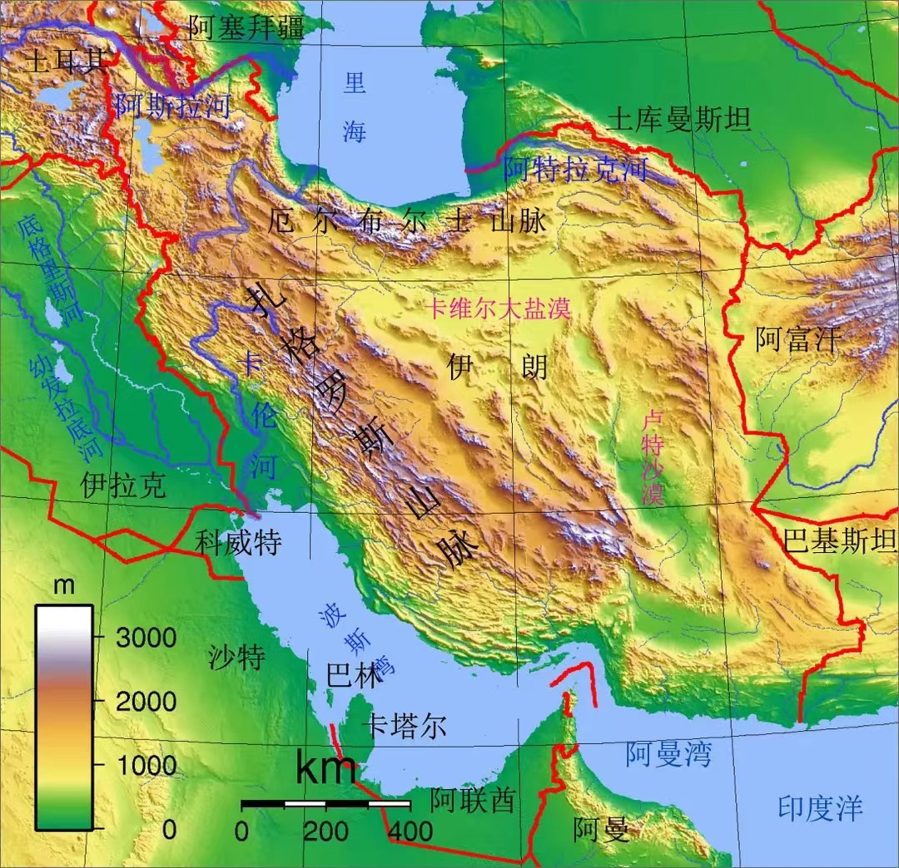
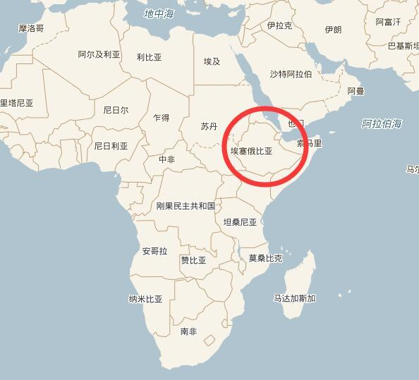
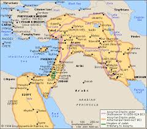
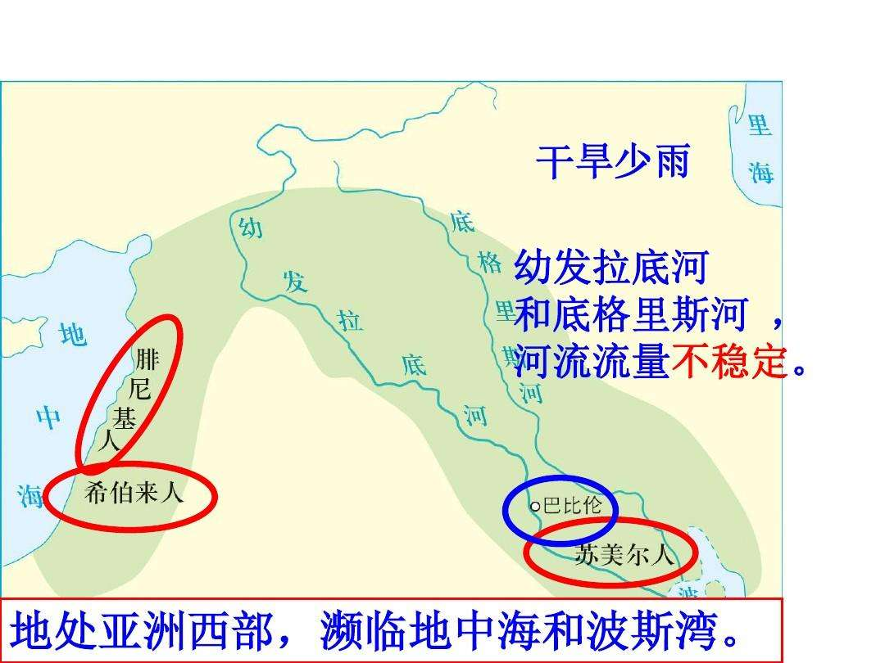
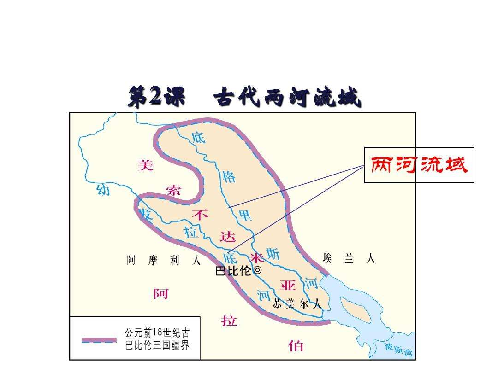
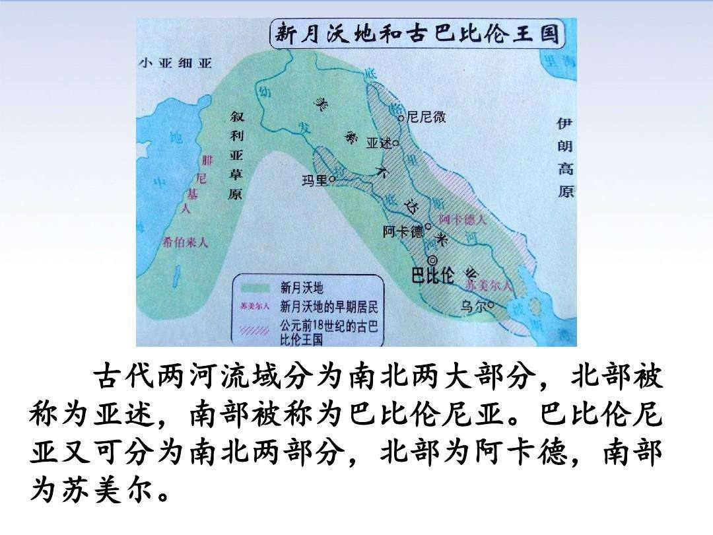
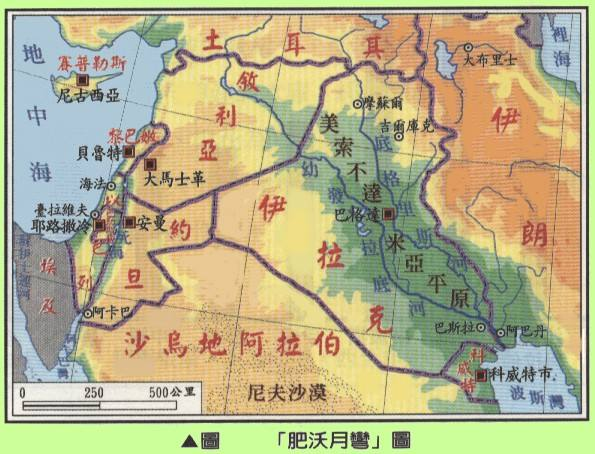
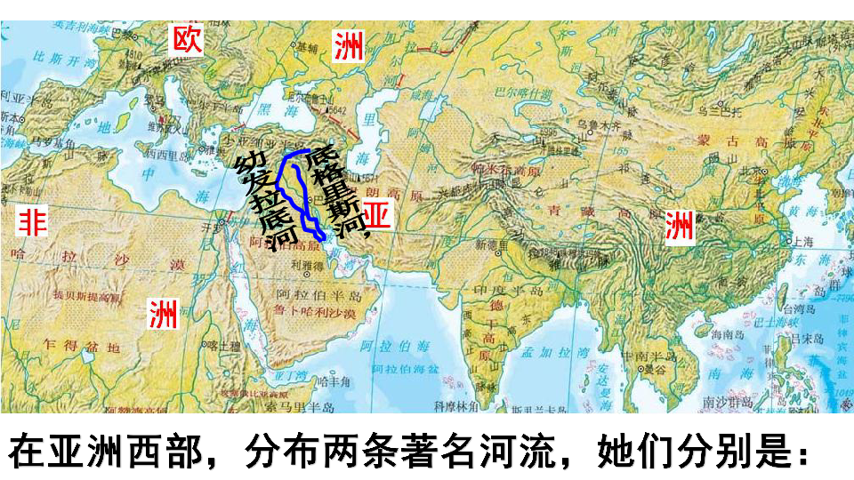

创世纪(Genesis) 02¶
2.1 Thus the heavens and the earth were finished, and all the host of them. ( 2-1-v1 )
2.2 And on the seventh day God ended his work Which he had made; and he rested on the seventh day from all his work which he had made. ( 2-2-v1 )
2.3 And God blessed the seventh day, and sanctified it: because that in it he had rested from all his work which God created and made. ( 2-3-v1 )
2.4 These are the generations of the heavens and of the earth when they were created, in the day that the LORD God made the earth and the heavens. ( 2-4-v1 )
2.5 And every plant of the field before it was in the earth, and every herb of the field before it grew: for the LORD God had not caused it to rain upon the earth, and there was not a man to till the ground. ( 2-5-v1 )
2.6 But there went up a mist from the earth, and watered the whole face of the ground. ( 2-6-v1 )
2.7 And the LORD God formed man of the dust of the ground, and breathed into his nostrils the breath of life; and man became a living soul. ( 2-7-v1 )
2.8 And the LORD God planted a garden eastward in Eden; and there he put the man whom he had formed. ( 2-8-v1 )
2.9 And out of the ground made the LORD God to grow every tree that is pleasant to the sight,and good for food; the tree of life also in the midst of the garden, and the tree of knowledge of good and evil.( 2-9-v1 )
2.10 And a river went out of Eden to water the garden; and from thence it was parted, and became into four heads.( 2-10-v1 )
2.11 The name of the first is Pison:that is it which compasseth the whole land of Havilah,where there is gold.( 2-11-v1 )
2.12 And the gold of that land is good:there is bdellium and the onyx stone.( 2-12-v1 )
2.13 And the name of the second river is Gihon: the same is it that compasseth the whole land of Ethiopia.( 2-13-v1 )
2.14 And the name of the third river is Hiddekel: that is it which goeth toward the east of Assyria. And the fourth river is Euphrates.( 2-14-v1 )
2.15 And the LORD God took the man, and put him into the garden of Eden to dress it and to keep it.( 2-15-v1 )
2.16 And the LORD God commanded the man, saying, Of every tree of the garden thou mayest freely eat:( 2-16-v1 )
2.17 But of the tree of the knowledge of good and evil, thou shalt not eat of it: for in the day that thou eatest thereof thou shalt surely die.( 2-17-v1 )
2.18 And the LORD God said, It is not good that the man should be alone; I will make him an help meet for him.( 2-18-v1 )
2.19 And out of the ground the LORD God formed every beast of the field, and every fowl of the air; and brought them unto Adam to see what he would call them: and whatsoever Adam called every living creature, that was the name thereof.( 2-19-v1 )
2.20 And Adam gave names to all cattle, and to the fowl of the air, and to every beast of the field; but for Adam there was not found an help meet for him.( 2-20-v1 )
2.21 And the LORD God caused a deep sleep to fall upon Adam, and he slept: and he took one of his ribs, and closed up the flesh instead thereof.( 2-21-v1 )
2.22 And the rib, which the LORD God had taken from man, made he a woman, and brought her unto the man.( 2-22-v1 )
2.23 And Adam said, This is now bone of my bones, and flesh of my flash: she shall be called Woman, because she was taken out of Man.( 2-23-v1 )
2.24 Therefore shall a man leave his father and mother, and shall cleave unto his wife: and they shall be one flesh.( 2-24-v1 )
2.25 And they were both naked, the man and his wife, and were not ashamed.( 2-25-v1 )
2.1 Thus the heavens and the earth were completed in all their vast array. ( 2-1-v2 )
2.2 By the seventh day God had finished the work he had been doing; so on the seventh day he rested from all his work. ( 2-2-v2 )
2.3 And God blessed the seventh day and made it holy, because on it he rested from all the work of creating that he had done. ( 2-3-v2 )
2.4 This is the account of the heavens and the earth when they were created. When the LORD God made the earth and the heavens. ( 2-4-v2 )
2.5 and no shrub of the field had yet appeared on the earth and no plant of the field had yet sprung up, for the LORD God had not sent rain on the earth and there was no man to work the ground , ( 2-5-v2 )
2.6 but streams came up from the earth and watered the whole surface the ground . ( 2-6-v2 )
2.7 the LORD God formed the man from the dust of the ground and breathed into his nostrils the breath of life,and the man became a living being. ( 2-7-v2 )
2.8 Now the LORD God had planted a garden in the east,in Eden;and there he put the man he had formed.( 2-8-v2 )
2.9 And the LORD God made all kinds of trees grow out of the ground–trees that were pleasing to the eye and good for food. In the middle of the garden were the tree of life and the tree of the knowledge of good and evil.( 2-9-v2 )
2.10 A river watering the garden flowed from Eden; from there it was separated into four headwaters.( 2-10-v2 )
2.11 The name of the first is the Pishon; it winds through the entire land of Havilah,where there is gold.( 2-11-v2 )
2.12 (The gold of that land is good; aromatic resin and onyx are also there.)( 2-12-v2 )
2.13 The name of the second river is the Gihon; it winds through the entire land of Cush.( 2-13-v2 )
2.14 The name of the third river is the Tigris; it runs along the east side of Asshur. And the fourth river is the Euphrates.( 2-14-v2 )
2.15 The LORD God took the man and put him in the Garden of Eden to work it and take care of it.( 2-15-v2 )
2.16 And the LORD God commanded the man, “You are free to eat from any tree in the garden;( 2-16-v2 )
2.17 but you must not eat from the tree of the knowledge of good and evil, for when you eat of it you will surely die.”( 2-17-v2 )
2.18 The LORD God said, “It is not good for the man to be alone. I will make a helper suitable for him.” ( 2-18-v2 )
2.19 Now the LORD God had formed out of the ground all the beasts of the field and all the birds of the air. He brought them to the man to see what he would name them; and whatever the man called each living creature, that was its name.( 2-19-v2 )
2.20 So the man gave names to all the livestock, the birds of the air and all the beasts of the field. But for Adam no suitable helper was found.( 2-20-v2 )
2.21 So the LORD God caused the man to fall into a deep sleep; and while he was sleeping, he took one of the man’s ribs and closed up the place with flesh.( 2-21-v2 )
2.22 Then the LORD God made a woman from the rib he had taken out of the man, and he brought her to the man.( 2-22-v2 )
2.23 The man said, “This is now bone of my bones and flesh of my flesh; she shall be called ‘woman’, for she was taken out of man”.( 2-23-v2 )
2.24 For this reason a man will leave his father and mother and be united to his wife, and they will become one flesh.( 2-24-v2 )
2.25 The man and his wife were both naked, and they felt no shame.( 2-25-v2 )
2.1、¶
Thus the heavens and the earth were finished, and all the host of them.
Thus the heavens and the earth were completed in all their vast array.
天地万物都造齐了。
同上。
由此，天和地，以及大量的布满期间的东西（万物），都完成了。
- 学习札记：
1、thus；host；vast；array；
thus：adv.由此；
host：n.主人，主机；主持人；许多； v.主持，做主人；
a host of ：许多，大量，众多；vast：adj.大量的，巨大的，广阔的；多指空间、面积、范围的巨大，不涉及重量；
array：n.排列，大批；v.排列，部署；
2.2、7th：holyday¶
And on the seventh day God ended his work Which he had made; and he rested on the seventh day from all his work which he had made.
By the seventh day God had finished the work he had been doing; so on the seventh day he rested from all his work.
到第七日，神造物的工已经完毕，就在第七日歇了他一切的工，安息了。
同上。
到了第七日，神完成了他的做的工作。他就在第七日从他的工作中歇息下来。
- 学习札记：
1、holyday；Sunday；festival；restday；
holyday：n.圣日，宗教节日；
主要强调的是：“神圣的”。后引申为按规定不工作的各种假日（时间可长可短）；Sunday：n.星期日，日曜日，是北欧古代祭祀太阳女神（sun）的日子；Sunday is a holyday.
festival：n.节日，纪念活动，欢乐; adj.节日的，喜庆的，快乐的。
主要强调的是：“欢乐的”。spring festival：春节（中国农历正月初一）；mid-autumn festival / moon festival：中秋节；
festive：adj.欢乐的；喜庆的；fester：v/n.（使）溃烂，（使）化脓；好奇葩的英文单词哦！rest day：休息日；
2.3、¶
And God blessed the seventh day, and sanctified it: because that in it he had rested from all his work which God created and made.
And God blessed the seventh day and made it holy, because on it he rested from all the work of creating that he had done.
神赐福给第七日，定为圣日。因为在这日，神歇了他一切创造的工、就安息了。
同上。
神就赐福给第七日，让它神圣起来，把它定为圣日：因为在这一日，神从他所有的创造的工作中歇息了下来。
- 学习札记：
1、sanctify；holy；
sanctify：[^sæŋ(k)tɪfai] vt.使…神圣化；把…奉献给神；使圣洁；认可；
sanctified：adj.神圣化的；认可的；
sanctimonial: n. 修女；
sanctimonious: adj. 假装圣洁的；假装虔诚的；假装诚实的；monial: [məuniəl] n.（古）竖框，直棂；（ = mullion）
holy: adj. 神圣的，圣洁的，至善的；
2.4、¶
These are the generations of the heavens and of the earth when they were created, in the day that the LORD God made the earth and the heavens.
This is the account of the heavens and the earth when they were created. When the LORD God made the earth and the heavens.
创造天地的来历，在耶和华神造天地的日子，乃是这样。
同上。
这就是天和地被创造的来历。那时，耶和华神造了天和地。
- 学习札记：
1、 generation; account;
generation: n.一代，一代人；产生，发生；
generate: vt.发生；生殖；使形成；
account: n. 账单；账户；理由；解释；记述；描述； vi.报账；解释；
2、 LORD; God; Jehovah;
LORD: n. 主，领主，君主，贵族；上帝；（一般指实际存在的君主）
lord and master: 一家之主；主人，东家；God: n. 神；上帝，天主；（一般指不存在的上帝）
thank god:谢天谢地；man of god: 圣人，先知；god knows:天晓得；god almighty:万能的上帝；Jehovah: [dʒi^həuvə] n. 耶和华（犹太教神名的基督教读法）
2.5、¶
And every plant of the field before it was in the earth, and every herb of the field before it grew: for the LORD God had not caused it to rain upon the earth, and there was not a man to till the ground.
and no shrub of the field had yet appeared on the earth and no plant of the field had yet sprung up, for the LORD God had not sent rain on the earth and there was no man to work the ground ,
野地还没有草木、田间的菜蔬还没有长起来，因为耶和华 神还没有降雨在地上，也没有人耕地。（应该是按 V2 翻译的）
同上。
野地里还没有草木出现，地里的植物还没有长出来，因为主 神还没有降雨到地上，还没有人来耕种土地。
- 学习札记：
1、 till; shrub; sprung;
till: 直到； v. 耕种；
shrub: n. 灌木；
sprung: v.弹起（spring的过去式）
spring: n.春天；
vt. 弹，跳，跃起；
2.6、¶
But there went up a mist from the earth, and watered the whole face of the ground.
but streams came up from the earth and watered the whole surface the ground .
但有雾气从地上腾起，滋润遍地。
同上。
但有雾气/溪流从地里出来，滋润整个地面。
- 学习札记：
1、 mist; stream;
mist: n. 薄雾； v. （使）蒙上薄雾；（使）模糊；
stream: n.溪流；潮流；光线； v. 流出；涌出；
2.7、¶
And the LORD God formed man of the dust of the ground, and breathed into his nostrils the breath of life; and man became a living soul.
the LORD God formed the man from the dust of the ground and breathed into his nostrils the breath of life, and the man became a living being.
耶和华 神用地上的尘土造人，将生气吹在他鼻孔里，他就成了有灵的活人，名叫亚当。
同上。
主 神用地上的尘土造了个人，再向他的鼻孔里吹入生命之气，于是这个人就变成了一个有灵魂的活人。
- 学习札记：
1、 breath[i]; breathe[ɛ]; soul;
breath[i]: n. 气，气息，呼吸；
breathe[ɛ]：v. 呼吸，低语；
soul: n.灵魂，心灵，精神，鬼魂；
soulmate：n.灵魂伴侣；
soulless：adj.没有灵魂的；
soulful：adj.充满感情的；
spirit：n.精神，心灵，志气，烈酒，情绪；
2.8、Eden[i]¶
And the LORD God planted a garden eastward in Eden; and there he put the man whom he had formed.
Now the LORD God had planted a garden in the east,in Eden;and there he put the man he had formed.
耶和华 神在东方的伊甸立了一个园子，把所造的人安置在那里。
同上。
主 神在东方的伊甸
（而不是“伊甸的东方”）种造了一个园子，把所造的那个人安置在那里。
（结合后面的[2.10]来一起理解，应该是：“伊甸”是东方的一个地名，一个较广泛区域的地名，“园子”就种造在这个地方。）
- 学习札记：
1、 plant; eastward = east;
Eden：[idn] 第一次出现。
plant: n.工厂，车间；植物，庄稼；设备； v.安置，种植；栽培，培养；
planted a garden：应该翻译成“种造”。传统翻译用的“立”，更趋向于意译。但也不能翻译成“种”，因为上帝是不需要、也不会亲自种地的；也不能用“造”，因为“造”的原文是 create ； 对比几种译法，就意译而言，“立”最合适；就直译而言，“种造”较为合适。eastward = east：adj.朝东的，东方的；adv.朝东；n.东方；
2.9、¶
And out of the ground made the LORD God to grow every tree that is pleasant to the sight,and good for food; the tree of life also in the midst of the garden, and the tree of knowledge of good and evil.
句式分解：the LORD God …. made to grow …. trees …. out of the ground ….
= the LORD God …. made …. trees …. grow …. out of the ground ….
made tees grow ：（让）使树长（出来）
And the LORD God made all kinds of trees grow out of the ground—-trees that were pleasing to the eye and good for food. In the middle of the garden were the tree of life and the tree of the knowledge of good and evil.
耶和华 神使各样的树从地里长出来，可以悦人的眼目，其上的果子好做食物。园子当中又有生命树、和分别善恶的树。
同上。
主 神使各种树从地上长出来，（这些树）看上去令人悦目，（树上结的果子）当作食物也（很）好。在园子当中，有生命之树和了解“善”和“恶”的树。
- 学习札记：
1、 pleasant = pleasing; sight；eye; midst = middle; life；
pleasant = pleasing: adj. 令人愉快的，舒适的，可爱的，友善的，晴朗的；
sight：n. 视觉，视野，镜像；v.看见，发现；
midst[midst] = amidst：在……中间，当中；
middle：中部，中间的。一般指中间等距离的部分；
knowledge：n.了解，理解；个人的知识，学问。 `` 注意：没有“智慧”的意思`` 。
智慧：wisdom（智慧、学问），intelligence（智力）the tree of the knowledge of good and evil：了解“善”和“恶”的树。不能翻译成：分别善恶的智慧之树。因为 knowledge 没有“智慧”的意思，而是“了解”的意思。life：生命，生活；
2.10、¶
And a river went out of Eden to water the garden; and from thence it was parted, and became into four heads.
A river watering the garden flowed from Eden; from there it was separated into four headwaters.
有河从伊甸流出来滋润那园子，从那里分为四道。
同上。
有一条河，从伊甸流出来，滋润那园子；并从那里分为四个源头。
（结合前面[2.8]来一起理解：“伊甸”是东方的一个较广泛的地区的名称，“园子”只是在这个地区里面、的一部分。）
- 学习札记：
1、 thence = there; part = separate; flow；headwater（s）；
thence: adv. 从那里 （= there ）；从那时起，从那以后；因此，所以；
part：v. 分开（= separate）；n.部分；
flow：v.n.流动
headwater（s）：n.河源的上游，源头；
2.11、¶
The name of the first is Pison:that is it which compasseth the whole land of Havilah,where there is gold.
The name of the first is the Pishon; it winds through the entire land of Havilah,where there is gold.
第一道名叫比逊，就是环绕哈腓拉全地的。在那里有金子。
同上。
第一条河的名字叫“派绅 ”，蜿蜒环绕“海唯拉 ”全地，在那里有黄金。
- 学习札记：
1、 compasseth; wind;
compasseth: 这个词查不到！估计是要么有误（比如是 compassed ）、要么是个老词已经不用了。；
compass：n.指南针；vt.包围wind：n.风，气流；v.缠绕，卷绕，环绕，迂回，蜿蜒，呼吸；
2、Pishon 和 Gihon 二条古河现在在哪里？
（网络资料）这二条古河在现在的地图上根本找不到，长期以来人们一直无法确定。美国密苏里大学的扎林斯教授经过长期的考证，认为：Pishon 河位于今天的沙特阿拉伯境内，由于地理气候 的变迁，那里现在已成为浩瀚沙漠中一条干涸的河床；而 Gihon 河就是现在发源于伊朗、最终注入波斯湾的库伦河（中文地图上称“卡伦河 Karun River ”）。据此推断，伊甸园就位于波斯湾地区四条河流的交汇处。只是在距今 大约7000年前，在最后一次冰川纪后，由于冰川融化致使海平面升高，伊甸园就沉入波斯湾海底了。
对于此观点，我从逻辑上是赞同的。
（网络资料）卡伦河（Karun River）是伊朗最长河流，也是唯一可通航的河流，位于伊朗西南部，为阿拉伯河支流，属于西亚两河流域的一部分。在古代，底格里斯河（Tigris）、 幼发拉底河（Euphrates）、卡伦河（Karun River）都是分别流入波斯湾（Persian Gulf）的，随着泥沙淤积和陆地的扩张，现在这三条河流最终合并为阿拉伯河再流入波斯湾（Persian Gulf）。
（网络资料）在2010年卫星图像上显示出，一条曾经流淌在阿拉伯半岛北部的叫做“Wadi Baton”的化石河，或者说是干涸的河床，也与幼发拉底河（Euphrates）合流。当这四条河汇合成一条河时， 汇合点大概在波斯湾（Persian Gulf）北部，而根据圣经记载有一条河流经伊甸，所以根据卫星图像和对希伯来书的详细研究，学者认为伊甸园就在波斯湾水下，而不是在陆地上。
科学家相信，在上一个冰河世纪，南极的冰川层有2英里高，海平面比现在低170英尺。最近的研究表明，波斯湾地区可能曾经是大陆一块和英国差不多大小的富饶平原，为大约75000年前的非洲之外 的人类提供了一个理想的避难所。后来冰川融化，覆盖了大地形成了波斯湾。在那漫长的时期，曾经至少出现过三次非常巨大的洪水，海平面在一夜之间上升30-40英尺，这也许就是圣经中诺亚方舟中 的洪水，巨大的洪水可能使得伊甸园消失了。

{kind=link}
{kind=link}
2.12、¶
And the gold of that land is good:there is bdellium and the onyx stone.
(The gold of that land is good; aromatic resin and onyx are also there.)
并且那地的金子是好的。在那里又有珍珠和红玛瑙。
同上。
那个地方的黄金是好的。在那里又有香脂（芳香的树脂）和玛瑙石。
- 学习札记：
1、 bdellium; onyx; aromatic；resin;
bdellium: [b不发音] n. 芳香树胶；没药树胶；没药属；宝石；
onyx：n. 缟玛瑙（也作玛瑙。就是常说的玛瑙）；爪甲；
green onyx：绿玉石；black onyx：黑玛瑙aromatic：adj.芳香的，芬芳的；n. 芳香剂；芳香植物；
resin：n.松香，树脂；vt.涂树脂；
珍珠：pearl [pɜːl] n. adj.
2.13、¶
And the name of the second river is Gihon: the same is it that compasseth the whole land of Ethiopia.
The name of the second river is the Gihon; it winds through the entire land of Cush.
第二道河名叫基训，同样的，它环绕“埃塞尔比亚”全地。
第二道河名叫基训，就是环绕古实全地的。
第二条河的名字叫“该汗 ”，蜿蜒环绕“库实 ”全地。
- 学习札记：
1、 Ethiopia;
Ethiopia[i]: n. 埃塞尔比亚；2、根据（ Pishon 和 Gihon 二条古河现在在哪里？ ）分析，“Gihon compasseth the whole land of Ethiopia（ 环绕埃塞尔比亚全地 ）”应该是错误的记载，因为相互距离较远。

{kind=link}
2.14、¶
And the name of the third river is Hiddekel: that is it which goeth toward the east of Assyria. And the fourth river is Euphrates.
The name of the third river is the Tigris; it runs along the east side of Asshur. And the fourth river is the Euphrates.
第三道河名叫西底结，流向亚述的东方。第四道河就是幼发拉底河。
第三道河名叫底格里斯，流在亚述的东方。第四道河就是幼发拉底河。
第三条河的名字叫“泰格瑞斯（底格里斯） ”，流在“阿舒尔 ”的东方。第四条河是“伊幼弗瑞忒斯（幼发拉底） ”。
- 学习札记：
1、 Hiddekel; Assyria; Asshur;
Tigris：[aɪ]
Hiddekel: n. 西底结。为圣经地名，Tigris 底格里斯河别名，译名据《圣经》和合本。意思是迅速流动的水。在圣经中仅在这一处出现；
底格里斯河（Tigris River）
古波斯语作 Tigra，希腊语作 Trigres，阿卡德语作 Idiklat，圣经中称 Hiddekel，阿拉伯语作 Dijla，土耳其语作 Dicle。《圣经》中记述：耶和华神在东方的伊甸立了一个园子， 有河从伊甸流出来滋润那园子，河分四道，其中第三道河叫“希底结”，有《圣经》研究学者指出，希底结河极有可能就是今天我们所称的底格里斯河。
Assyria[ə`siriə]：n. 西南亚洲底格里斯河流域的古国。其最初的首都是 Asshur ；
An ancient empire and civilization of western Asia in the upper valley of the Tigris River. In its zenith between the ninth and seventh centuries b.c. the empire extended from the Mediterranean Sea across Arabia and Armenia.
亚述（国）：亚洲西部底格里河流域北部一帝国和文明古国。公元前9世纪至7世纪，在它的强盛时期，亚述帝国的疆域从地中海跨越阿拉伯和亚美尼亚地区。
词源：
Middle English, from Latin Assyria, from Greek Assyria, short for Assyria ge “the Assyrian land,” from fem. of Assyrios “pertaining to Assyria,” from Akkadian Ashshur, name of the chief city of the kingdom and also of a god, probably from Assyrian sar “prince.” (See also Syria).
Assyria一词源于古阿卡德语“Ashshur阿述”。本身是神名和其所住城邦名，现在Assyria这个说法是希腊语和拉丁语的转音并且加上了ria的词根，意为亚述人的土地国家。 Syria和Assyria是同源词，原写作Syrioi，是 “Assyrioi”。
Asshur[‘ɑ:ʃuə]：n.阿舒尔（男子名）；阿舒尔（亚述宗教的主神和战神）；阿舒尔（亚述 / Assyria 古国的原首都）亚述。古代亚述人崇拜的主神和战神。
2、 Assyria 亚述国;
亚述人在美索不达米亚历史上活动时间约有一千余年，大致可分为早期亚述、中期亚述和亚述帝国三个时期。亚述帝国是其历史上最强盛的时期。称雄的时间从公元前8世纪中叶到公元前609年， 雄踞亚洲一个多世纪。首都尼尼微成为世界性大都市。公元前9世纪到前8世纪是亚述人扩张的大好时机。
古亚述城邦，亦称亚述城市公社。是一个奴隶制的贵族寡头共和国。约产生于公元前2500年。最早提到亚述的古代文献属乌尔第三王朝。居民以塞姆语人为主。此时社会分化已经很明显。 上面是商人殖民者奴主贵族，下面是广大的自由民平民。和这些贵族平民自由民相对里的奴隶。公元前约1700年，亚述城邦向外扩张，势力曾达到地中海沿岸。但是，后来胡里特人的国家 米丹尼称霸北部两河流域，古亚述历史就此结束。
（另）：
亚述 Assyria是兴起于美索不达米亚即两河流域，今伊拉克境内幼发拉底河和底格里斯河之间的奴隶制国家。公元前8世纪末，亚述逐步强大，先后征服了小亚细亚东部叙利亚、腓尼基、巴勒斯坦、 巴比伦尼亚和埃及等地。
亚述帝国。英语：Assyria empire，公元前935年-前612年，兴起于美索不达米亚即两河流域，今伊拉克境内幼发拉底河和底格里斯河一带的国家，使用的语言有阿拉米语，阿卡德语等。 公元前8世纪末，亚述逐步强大。

{kind=link}
{kind=link}
{kind=link}
{kind=link}
{kind=link}
{kind=link}
{kind=link}
2.15、¶
And the LORD God took the man, and put him into the garden of Eden to dress it and to keep it.
The LORD God took the man and put him in the Garden of Eden to work it and take care of it.
耶和华 神将那人安置在伊甸园，使他修理看守。
同上。
主 神将那个人安置在伊甸园里，（让他）经管、照看园子。
- 学习札记：
1、 dress; keep;
dress: v. 给…穿衣，打扮，装扮；
keep：v. 保持，遵守，经营，饲养，（使）继续；
神让人在园子里干什么？
综合二个版本的用词，分别使用了：to dress it 、 to keep it 、 work it 、 take care of it 。应该是：照看、装扮、经管。而没有：修理、劳动的意思。 所以我猜测，伊甸园既然是天堂，就应该是享福的地方，而不应该是让人辛苦劳动干活的地方。
work it：应该是：为了让园子运作起来而进行的一些工作，而不是像农夫一样的劳动、干活。有 keep 保持、（使）继续 的意思。
2.16、¶
And the LORD God commanded the man, saying, Of every tree of the garden thou mayest freely eat:
And the LORD God commanded the man, “You are free to eat from any tree in the garden;
耶和华 神吩咐他说，园中各样树上的果子，你可以随意吃。
同上。
主 神命令他说，园中各样树上的果子，你可以随意吃。
- 学习札记：
1、 command; thou; mayest;
command: n/v. 命令。强调权威性、强制性；
thou[ðaʊ]：古语：你，尔；
mayest[meist]：古语：may ，仅与 thou 连用。
吩咐：比较接近的是 tell ，这里用了 command ，说明神对人是“命令”，而不是语气较缓的“吩咐”。
2.17、¶
But of the tree of the knowledge of good and evil, thou shalt not eat of it: for in the day that thou eatest thereof thou shalt surely die.
but you must not eat from the tree of the knowledge of good and evil, for when you eat of it you will surely die.”
只是分别善恶树上的果子，你不可吃，因为你吃的日子必定死。（应该是按照 V1 版本的翻译）
同上。
但是，了解“善”和“恶”的树上的果子，你一定不要吃，因为你吃了它、你将必死。
- 学习札记：
1、 thereof; shalt;
thereof: adv. 在其中；关于；由此；这里应该作“由此”讲；
shalt：v.将要，应该，必须（shall 的第二人称单数现在式）
eatest：应该是 eated 的笔误。可能是圣经在传抄、传播过程中造成的；
神是用命令（command）的口气告诉人的，所以才用了 must not eat 和 will surely die
must not eat：而不是 don`t ；
will surely die：将必死；
2.18、¶
And the LORD God said, It is not good that the man should be alone; I will make him an help meet for him.
The LORD God said, “It is not good for the man to be alone. I will make a helper suitable for him.”
耶和华 神说，那人独居不好，我要为他造一个配偶帮助他。
同上。
同上。
- 学习札记：
1、 help meet; helper; suitable;
meet：v. 遇见；adj. 合适的；
help meet = helpmeet: n. 合作者，伙伴，配偶；
helper：n.助手，帮手；
suitable：adj. 适当的，相配的，合适的；
神造女人的本意是什么？
是因为神觉得：It is not good for the man to be alone 。综合二种版本的意思，women 是 man 的：helpmeet（配偶、伙伴）、helper（帮手），是为了给 man 排遣 alone（孤独）用的。
2.19、Adam[‘ædəm]¶
And out of the ground the LORD God formed every beast of the field, and every fowl of the air; and brought them unto Adam to see what he would call them: and whatsoever Adam called every living creature, that was the name thereof.
Now the LORD God had formed out of the ground all the beasts of the field and all the birds of the air. He brought them to the man to see what he would name them; and whatever the man called each living creature, that was its name.
耶和华 神用土所造成的野地各样走兽和空中各样飞鸟，都带到那人面前，看他叫什么。那人怎样叫各样的活物，那就是它的名字。（似乎是按 V2 版本）
同上。
主 神用地上的土造出所有野地上的走兽和所有空中的飞鸟，把它们都带到那个人（亚当）的跟前看他给起什么名字；随便那人（亚当）怎样称呼各样活物，便就成了它（这个活物）的名字。
- 学习札记：
1、 fowl; unto; whatsoever;
Adam[‘ædəm]：第一次出现。
beast：n.野兽；
fowl: n. 飞禽；v.打鸟，捕野禽；
unto：prep.[古]到，直到；向（= to）。这里可以理解为：到…跟前；
whatsoever：pron.无论什么，无论怎样；= whatever：pron.无论什么；
2、 the LOAD God had formed out of the ground … / out of the ground the LOAD God formed … 应该翻译成：
应该翻译成：“神用地上的土造出… （各样活物）” 而不能翻译成：“神造出地上的…（各样活物）”
比照：[2.7] And the LORD God formed man of the dust of the ground / the LORD God formed the man from the dust of the ground （神用地上的土造人）
3、中文翻译（似乎）是二个版本的综合：从本节很明显能看出来。
every beast …, and every fowl .. / all the beasts … and all the birds 标准翻译为：“各样（走兽）和各样（飞鸟）” 。用的是 V1 版；
unto Adam to … / to the man to … 标准翻译为：“带到那人面前” 。用的却是 V2 版；
2.20、¶
And Adam gave names to all cattle, and to the fowl of the air, and to every beast of the field; but for Adam there was not found an help meet for him.
So the man gave names to all the livestock, the birds of the air and all the beasts of the field. But for Adam no suitable helper was found.
那人便给一切牲畜、和空中飞鸟、野地走兽都起了名。只是那人没有遇见配偶帮助他。
同上。
那人（亚当）便给所有牲畜、和空中飞鸟、所有野地走兽都起了名；但是，对于亚当，却没有找到合适的伴侣。
- 学习札记：
1、 cattle; found;
cattle: n. [总称]牛；牲畜 = livestock ；
found：v. 创建；找到（find 的过去分词）；
2.21、¶
And the LORD God caused a deep sleep to fall upon Adam, and he slept: and he took one of his ribs, and closed up the flesh instead thereof.
这里的原文用了多个 he ，这会使人分不清某个 he 到底是指 God 还是 Adam ，从而导致歧义。比如：神是从自己的身上还是亚当的身上取出的肋骨。虽然从上下文的理解不难得出“是从亚当 的身上取出”的结论，但毕竟从用词上不够严谨。因此，V2 版本的描述就非常明确、严谨了。
So the LORD God caused the man to fall into a deep sleep; and while he was sleeping, he took one of the man’s ribs and closed up the place with flesh.
耶和华神使他沉睡，他就睡了。于是取下他的一条肋骨，又把肉合起来。
于是耶和华神使这个男人沉睡。在他睡着的时候，取下他的一条肋骨，又把肉合起来。
于是，主 神使亚当沉睡。在他（亚当）睡着的时候，神就取出这人（亚当）的一条肋骨，又把肉合上了。
- 学习札记：
1、 cause; fall upon; thereof;
cause: n. 原因；事业；目标； vt.引起；使遭受；
fall upon sb：v. 降临到某人身上；
fall: vi.落下；降落；变成；来临；n.跌落；下落；下降；减少；堕落；沦落；
fall into: v.落入，陷入；分成；
thereof: adv.在其中；关于；由此；这里应该作“在其中”讲；
2、 the LORD God caused a deep sleep to fall upon Adam / the LORD God caused the man to fall into a deep sleep 这里为什么不用 make 或 take 呢？
是不是因为“从人身上取肋骨”是一件使人遭受痛苦的事儿？
或者是，神“发起/引起”了一个“沉睡”、并“降临”给亚当，由此显示神的“万能”和“神力”？！
2.22、¶
And the rib, which the LORD God had taken from man, made he a woman, and brought her unto the man.
Then the LORD God made a woman from the rib he had taken out of the man, and he brought her to the man.
耶和华 神就用那人身上所取的肋骨造成一个女人，领她到那男人跟前。
同上。
同上。
2.23、¶
And Adam said, This is now bone of my bones, and flesh of my flash: she shall be called Woman, because she was taken out of Man.
The man said, “This is now bone of my bones and flesh of my flesh; she shall be called ‘woman’, for she was taken out of man”.
那人说：“这是我骨中的骨，肉中的肉。可以称她为女人，因为她是从男人身上取出来的”。
同上。
那人（亚当）说：“这是我骨中的骨，肉中的肉。可以称她为‘女人’，因为她是从男人身上取出来的”。
- 学习札记：
1、 这里为什么会用到一个 now ？
我想，可能是神刚做完的，立刻就领到亚当跟前，所以才有了 now 的意思。
2.24、¶
Therefore shall a man leave his father and mother, and shall cleave unto his wife: and they shall be one flesh.
For this reason a man will leave his father and mother and be united to his wife, and they will become one flesh.
因此，人要离开父母，与妻子连合，二人成为一体。
同上。
由此，一个男人就要离开他的父母、并与他的妻子结合，他们将成为一体（一个肉体）。
- 学习札记：
1、 Therefore; flesh;
Therefore: adv. 由此；
flesh: n. 肉体；肉；
2.25、¶
And they were both naked, the man and his wife, and were not ashamed.
The man and his wife were both naked, and they felt no shame.
当时夫妻二人，赤身裸体，并不羞耻。
同上。
（当时）夫妻二人，赤身裸体，他们感到并不羞耻。
- 学习札记：
1、 naked; ashamed; shame;
naked[ei][e]: adj. 裸体的；无装饰的；无证据的；直率的；
ashamed: adj. 惭愧的，感到难为情的；耻于…的；
shame: n. 羞耻；vt.使羞耻，使丢脸；
2、 （they） were not ashamed / they felt no shame. 应该翻译成：“他们感到并不羞耻”，而不应该翻译成：“他们不感到羞耻”
因为，“他们不感到羞耻”，在汉语的语境中有“不知羞耻、不知廉耻”的贬义的意思，带有主观评判的感觉。
而此时的亚当他们二人，还只是神刚刚创造出来的、还没有“善恶、好坏”之分的、还没有思想的、“纯粹”的人，神还没有给他们赋予“羞耻”的概念，所以他们此时感受到的是“不羞耻”。